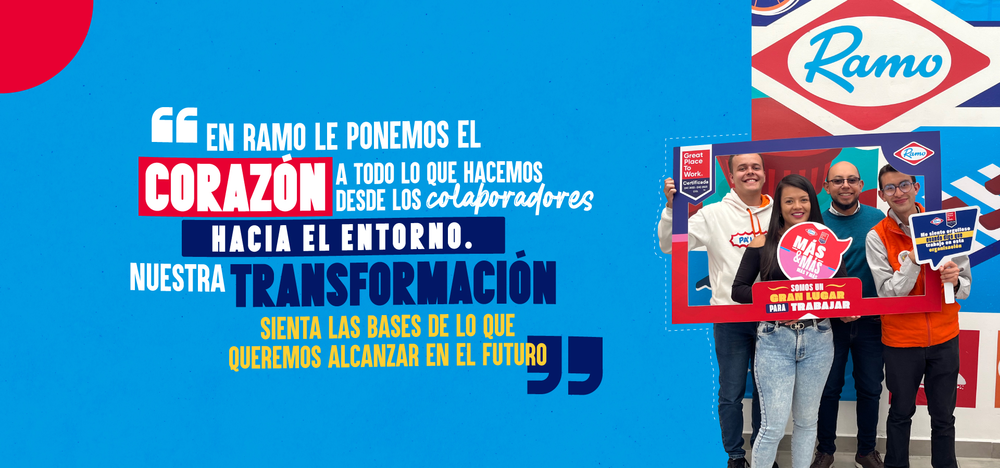

Misión

Ofrecer a los colombianos productos de panadería y pastelería de alta calidad que enriquezcan cada momento del día. Nos dedicamos a la elaboración de alimentos frescos y sabrosos, utilizando ingredientes seleccionados y procesos tradicionales, para proporcionar una experiencia de sabor inigualable que une a las familias y celebra la tradición.
Visión

Ser la marca líder en panadería y pastelería en Colombia, reconocida por nuestra excelencia, innovación y compromiso con la calidad. Queremos ser la primera opción para quienes buscan productos frescos y deliciosos, transformando cada ocasión en un momento especial y memorable.
Características de la empresa

¡Bienvenido a Ramo, la tradición en panadería y pastelería de Colombia! En nuestro sitio web, descubrirás una amplia gama de productos frescos y sabrosos, desde nuestros clásicos panes y pasteles hasta nuestras delicias más innovadoras. Conoce nuestra historia, explora nuestras ofertas y encuentra inspiración para tus momentos especiales. En Ramo, cada bocado es un homenaje a la calidad y a la tradición que nos caracteriza. ¡Únete a nosotros y haz de cada día una celebración con Ramo!